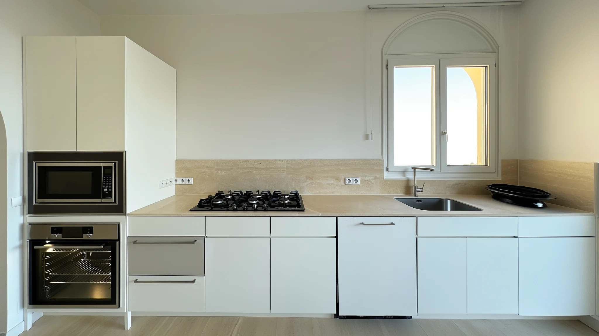
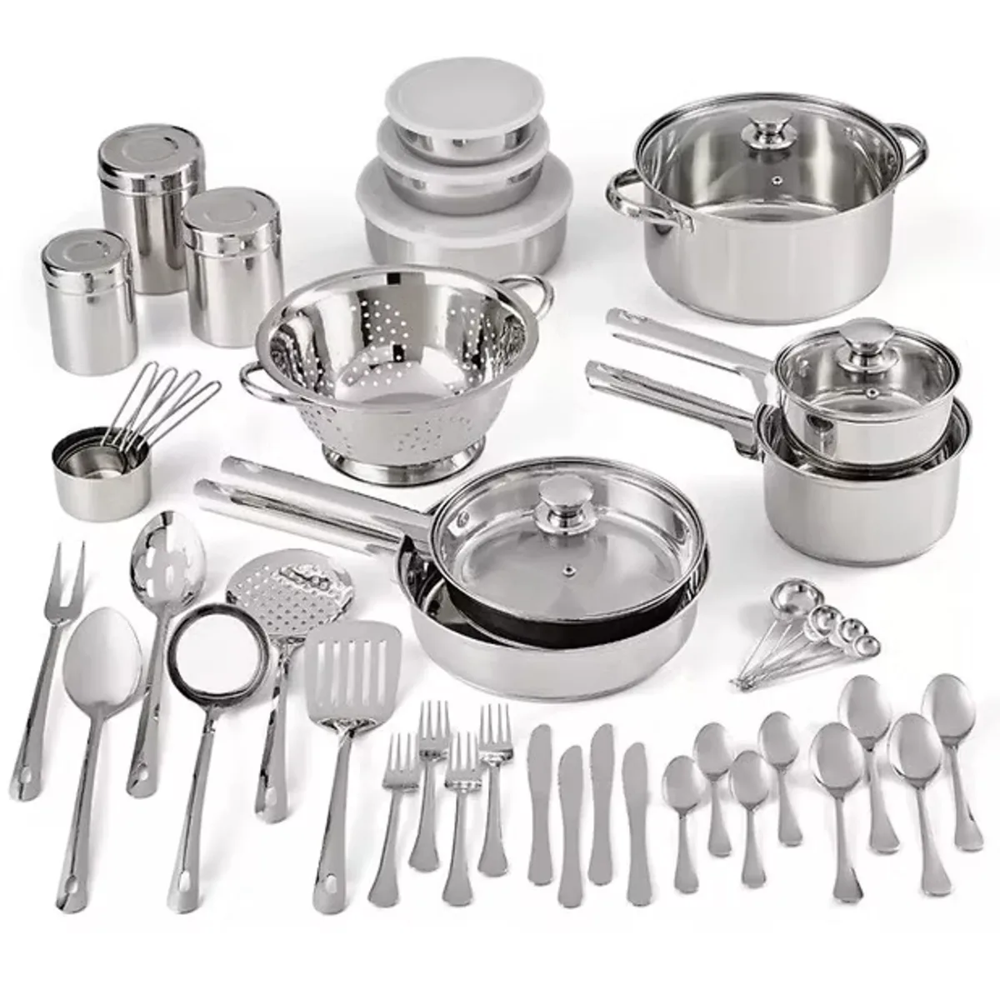

Kitchen kashering for rentals, in Jerusalem and across Israel
We kasher your kitchen so you can settle in with confidence: fully prepared, strictly kosher and ready to use.
Message to book
- Whole kitchen $350, about 2 hours
- Expert mashgichim, following cRc guidelines
- Kashering kitchens since 2019
Ready to use.
Message to book
- Whole kitchen $350, about 2 hours
- Prices for Jerusalem; elsewhere, a fee by distance

Your pots, cutlery and utensils.
$180about 1 hour
- Included
- Pots, stainless steel only. Cutlery. Kitchen utensils.
- Cannot be kashered
- Pots of other materials, and frying pans. We can bring a new frying pan for $15.
- Not in the kitchen price
- The kitchen kashering covers the appliances and surfaces; pots, pans and cutlery are this service.
For guests in vacation rentals, and for Pesach.
- Staying in a vacation rental?We kasher the kitchen of the apartment you are staying in, for guests who keep kosher.
- Preparing for Pesach?Your kitchen kashered and ready before Yom Tov.
- Moving into a new home?For homeowners and property managers too.
- Where
- Jerusalem, and across Israel. Prices are for Jerusalem; other places have a fee by distance.
- Who kashers
- Expert mashgichim, following cRc guidelines.
- Languages
- English and Hebrew.
- Booking
- Send us your dates and the address, and we will find a time with you.
- Since
- 2019.
Book your kashering.
- Whole kitchen
- $350, about 2 hours. Oven and racks, stovetop, microwave, countertops, sink and faucet, hot plate.
- Pots and cutlery
- $180, about 1 hour.
- Extra oven cleaning
- $40.
Message to book
Opens our page on MyIsraelRental, where you can message us with your dates.